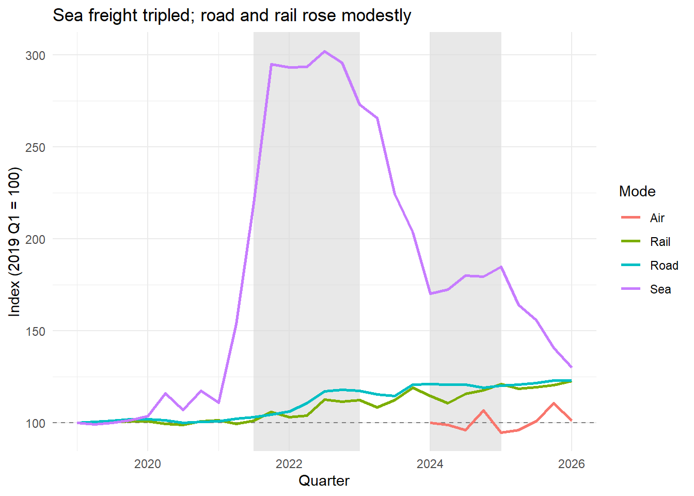
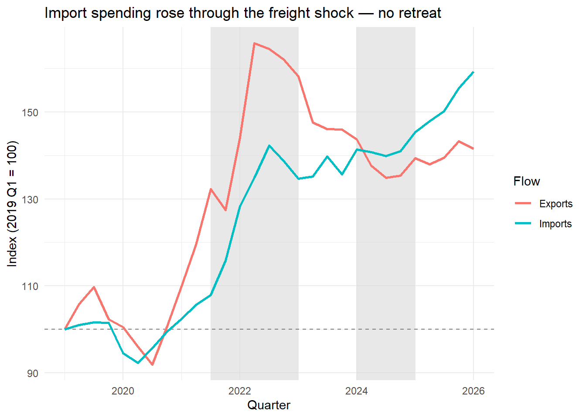
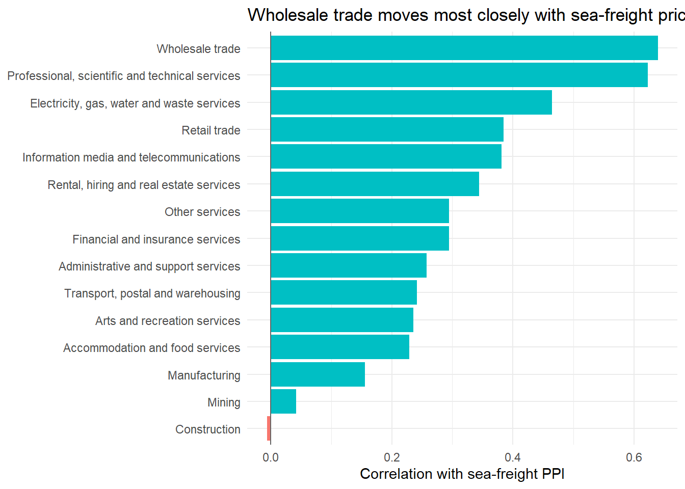

# helper function: same three stages for each dataset, so I don't
# copy-paste the pipeline three times
process_abs <- function(raw_file, lookup_file, label_col) {
# Stage 1: read the ABS CSV (skip 9 metadata rows so the Series ID
# row becomes the header) and read the lookup table
raw <- read_csv(here("data-raw", raw_file), skip = 9)
lookup <- read_csv(here("data-raw", lookup_file))
# Stage 2: transform
tidy <- raw |>
rename(date = 1) |> # first column holds the dates
pivot_longer(cols = -date,
names_to = "series_id",
values_to = "value") |>
inner_join(lookup, by = "series_id") |> # keep only verified series
# ABS dates look like "Mar-2019", so parse month-year with my()
mutate(quarter = floor_date(my(date), "quarter")) |>
filter(quarter >= as.Date("2019-01-01"),
!is.na(value)) |>
# trade debits (imports) are published as negative dollars,
# so take absolute values before indexing
mutate(value = abs(value)) |>
# trade is monthly: average months within each quarter so all
# three datasets line up on the same quarterly grid
group_by(across(all_of(label_col)), quarter) |>
summarise(value = mean(value), .groups = "drop") |>
# rebase every series so 2019 Q1 = 100 (comparable across datasets)
group_by(across(all_of(label_col))) |>
arrange(quarter, .by_group = TRUE) |>
mutate(index = 100 * value / first(value)) |>
ungroup() |>
select(all_of(label_col), quarter, index)
return(tidy)
}
ppi <- process_abs("ppi.csv", "ppi_lookup.csv", "mode")
trade <- process_abs("trade.csv", "trade_lookup.csv", "flow")
biz <- process_abs("biz.csv", "biz_industry_lookup.csv", "industry")
# Stage 3: save processed data so the blog chunks can re-use it
saveRDS(ppi, here("data-processed", "ppi.rds"))
saveRDS(trade, here("data-processed", "trade.rds"))
saveRDS(biz, here("data-processed", "biz.rds"))
message("✓ Data processed and saved.")Supply-Chain Resilience to Freight-Price Shocks in Australia
Assignment 4 ETC5512
Gaurav Warke (36782122)
Due Date: June 9, 2026
Data Details
Question 1: Research Question
How resilient is Australia’s supply chain to global freight-price disruptions? Specifically, when shipping costs spike, do businesses adjust trade patterns or absorb costs through margins?
Three angles:
- Do freight prices show clear shock patterns across transport modes?
- How does Australian import/export activity respond when costs rise?
- Which business sectors face the highest exposure to freight shocks?
Question 2: Data Suitability
Why these three datasets?
I selected three complementary ABS releases that together capture the full supply-chain impact. All are publicly licensed (CC BY 4.0) and cover 2019 Q1 – 2026 Q1 (29 quarters).
Producer Price Indexes (cat. 6427.0):
- Source: Australian Bureau of Statistics
- Content: Price-side view – quarterly output price indexes for the Transport, Postal and Warehousing division, covering Road, Rail, Sea and Air freight modes (Original series)
- Last updated: March quarter 2026 release
- Data type: Census of price observations, published as index time series
- Limitations: Air freight series only begins 2024 Q1 (9 observations), so its trend is unreliable
- Privacy/Ethics: Aggregated indexes; no individual businesses identifiable
International Trade in Goods (cat. 5368.0):
- Source: Australian Bureau of Statistics
- Content: Activity-side view – monthly, seasonally adjusted goods credits (exports) and debits (imports) in current-price $ millions, revealing whether Australia’s trading activity changed in response to freight costs
- Last updated: March 2026 release
- Data type: Administrative census (customs records)
- Limitations: Values are nominal (current prices), so price rises are embedded in them – they measure import/export spending, not pure volumes. ABS also suppresses ~5% of commodity-level detail under the Confidential Commodities List. Debits are published as negative values
- Privacy/Ethics: Aggregated national flows; confidentiality suppression actively protects individual exporters/importers
Business Indicators (cat. 5676.0):
- Source: Australian Bureau of Statistics
- Content: Sector-side view – quarterly sales by 15 ANZSIC industry divisions, as seasonally adjusted chain volume measures (i.e. real, inflation-removed sales), showing which industries’ real activity moved with freight costs
- Last updated: March quarter 2026 release
- Data type: Survey of businesses (stratified sample)
- Limitations: Excludes micro non-employing businesses (~10–15% of the economy)
- Privacy/Ethics: Survey responses aggregated to industry division level; no direct identifiers
Shared limitation: all three datasets support co-movement analysis only – correlations in this work are not evidence of causation.
Question 3: Download and Processing Steps
Downloading the data
The three raw files were downloaded as time-series tables from the ABS website and saved as CSVs in data-raw/:
ppi.csv– visit https://www.abs.gov.au/statistics/economy/price-indexes-and-inflation/producer-price-indexes-australia, open Data downloads, and download the Transport, Postal and Warehousing industries time-series table.trade.csv– visit https://www.abs.gov.au/statistics/economy/international-trade/international-trade-goods/latest-release and download the goods credits/debits time-series table.biz.csv– visit https://www.abs.gov.au/statistics/economy/business-indicators/business-indicators-australia/latest-release and download the sales by industry time-series table.
If any link changes, search the catalogue number (6427.0, 5368.0, 5676.0) on https://www.abs.gov.au. Each file keeps the standard ABS layout: 9 metadata rows (Unit, Series Type, Data Type, Frequency, Collection Month, Series Start, Series End, No. Obs), then a Series ID header row, then one row per period in Mon-YYYY format.
The three lookup files (ppi_lookup.csv, trade_lookup.csv, biz_industry_lookup.csv) are author-created mappings from ABS series IDs to readable labels. Every series ID was verified against the ABS March 2026 release (full list in README.txt). One transcription error (Administrative and support services, A3538843R → corrected to A3538843C) was caught during this verification and is reflected in the current lookup file.
The pipeline has three stages – read, transform, save. The chunk below is the complete, runnable ingest pipeline:
Key points:
- Series IDs loaded from CSV lookup files (transparent, auditable)
- Rebasing formula:
index = 100 × (value / baseline_value)where baseline = 2019 Q1 - All three datasets filtered to 2019 Q1 onwards, capturing both shocks: the 2021–22 container crisis and the 2024 Red Sea disruption
- Output is three tidy
.rdsfiles sharing the same schema (quarter, category,index) so they join cleanly onquarter: ppi 96 rows (Road/Rail/Sea × 29 quarters + Air × 9), trade 58 rows (2 × 29), biz 435 rows (15 × 29)
References
Australian Bureau of Statistics. (2026). Producer Price Indexes, Australia (cat. 6427.0). https://www.abs.gov.au/statistics/economy/price-indexes-and-inflation/producer-price-indexes-australia. Accessed 6 June 2026.
Australian Bureau of Statistics. (2026). International Trade in Goods, Australia (cat. 5368.0). https://www.abs.gov.au/statistics/economy/international-trade/international-trade-goods/latest-release. Accessed 6 June 2026.
Australian Bureau of Statistics. (2026). Business Indicators, Australia (cat. 5676.0). https://www.abs.gov.au/statistics/economy/business-indicators/business-indicators-australia/latest-release. Accessed 6 June 2026.
Wickham H, Averick M, Bryan J, Chang W, McGowan LD, François R, Grolemund G, Hayes A, Henry L, Hester J, Kuhn M, Pedersen TL, Miller E, Bache SM, Müller K, Ooms J, Robinson D, Seidel DP, Spinu V, Takahashi K, Vaughan D, Wilke C, Woo K, Yutani H (2019). “Welcome to the tidyverse.” Journal of Open Source Software, 4(43), 1686. https://doi.org/10.21105/joss.01686.
Müller K (2020). here: A Simpler Way to Find Your Files. R package version 1.0.1. https://CRAN.R-project.org/package=here.
Grolemund G, Wickham H (2011). “Dates and Times Made Easy with lubridate.” Journal of Statistical Software, 40(3), 1–25. https://www.jstatsoft.org/v40/i03/.
Zhu H (2024). kableExtra: Construct Complex Table with ‘kable’ and Pipe Syntax. R package version 1.4.0. https://CRAN.R-project.org/package=kableExtra.
Wickham H, Pedersen T, Seidel D (2023). scales: Scale Functions for Visualization. R package version 1.3.0. https://CRAN.R-project.org/package=scales.
Wickham, H., Çetinkaya-Rundel, M., & Grolemund, G. (2023). R for Data Science (2nd ed.). O’Reilly Media.
Blog Post
Why should ETC5512 students care about freight prices?
In 2021, global shipping rates roughly tripled. Containers that cost about USD 2,000 to move from Asia to Australia were suddenly quoted at USD 6,000 or more. Then in 2024, attacks on shipping in the Red Sea forced vessels around the Cape of Good Hope, creating a second cost wave. For an island economy that imports most of its manufactured goods, the question for Australian businesses was simple: adapt or absorb?
“Adapt” would mean visible changes in trading activity – fewer imports, switched suppliers, different transport modes. “Absorb” would mean trade carries on while margins quietly compress. These two responses leave very different fingerprints in open data, which is exactly what makes this a question we can answer with the skills from this unit: finding fit-for-purpose official data, joining datasets that were never designed to be joined, and being honest about what the result can and cannot tell us.
Where does the data come from?
Everything here is free, public ABS data: freight Producer Price Indexes (the cost side), International Trade in Goods (the spending side – nominal, seasonally adjusted dollars), and Business Indicators sales by industry (the sector side – real, chain-volume sales). The three releases share nothing except time, so I rebased every series to an index where 2019 Q1 = 100 and joined on quarter, averaging the monthly trade data within quarters. An index of 150 simply means “50% above the pre-COVID baseline” – which makes a freight price, an import bill, and retail sales directly comparable on one scale. Full sourcing, series-ID verification and the processing pipeline are in the Data Details tab and README.
Finding 1: The price shock was real – and it was maritime

Sea-freight prices tripled relative to the 2019 baseline, peaking at an index of 302 in 2022 Q3 – roughly 200% above pre-COVID levels. This wasn’t a gradual trend; it was a sharp spike concentrated in the shaded 2021–22 window, followed by an equally dramatic fall and a smaller echo in 2024. Over the same shock period, road freight peaked at just 118 and rail at 113 – rises of under 20% – which tells us the shock was maritime-specific rather than economy-wide transport inflation. (Air freight only enters the data in 2024, so I show it for completeness but don’t lean on it.)
What this means: for anything arriving by ship, this was the largest freight cost shock in at least a decade. Either consumer prices went up, or margins compressed.
Finding 2: Imports didn’t retreat – Australia paid up

If businesses had responded to tripled shipping costs by cutting orders or hurriedly switching to local suppliers, we would expect a visible dent in import activity during 2021–22. The opposite happened: nominal import spending rose through the shock window, peaking around 142 – about 42% above the 2019 baseline – and never dipped below trend.
One honest caveat: these are current-price values, so part of that rise is the higher freight and goods prices being passed through. But that’s precisely the absorption fingerprint – if adjustment had dominated, falling quantities would have dragged spending down despite higher prices. Instead, Australia kept importing and simply paid more.
The mechanism: qualifying a new supplier takes 6–12 months; paying a higher freight invoice is immediate. Absorption is the fast option, and the data says it’s the one firms took.
Finding 3: Exposure rankings tell a story – and a cautionary tale
If costs were absorbed, the pain should show up unevenly across sectors. To test this, I correlated each industry’s real (chain-volume) sales index with the sea-freight price index over the full 29-quarter window.

| Industry | Correlation with sea-freight PPI |
|---|---|
| Wholesale trade | 0.64 |
| Professional, scientific and technical services | 0.62 |
| Electricity, gas, water and waste services | 0.47 |
| Manufacturing | 0.16 |
| Mining | 0.04 |
| Construction | -0.01 |
Wholesale trade tops the ranking (r ≈ 0.64), which fits the story perfectly – wholesalers are the sector whose stock literally arrives in containers, and their sales moved most closely with shipping costs. At the bottom sit Construction and Mining (r ≈ 0), domestically anchored sectors the shock largely bypassed.
But the middle of the ranking is a lesson in critical thinking. Professional services correlates almost as highly as Wholesale – with no container ships involved – while Manufacturing, which I expected near the top, sits at only r ≈ 0.16. Correlations between levels of two series partly capture the fact that everything grew together through the post-COVID recovery, not just freight exposure. The signal is most trustworthy at the extremes (Wholesale clearly co-moves; Construction and Mining clearly don’t), and weakest in the middle.
I tested this directly: recomputing every correlation on quarter-on-quarter changes instead of levels strips out the shared trend, and most of the relationships vanish – Wholesale falls from +0.64 to -0.13. Far from undermining the story, this strengthens it: quarter to quarter, sector sales simply did not respond to freight swings, which is exactly the fingerprint absorption should leave. The level correlations describe who lived through the shock alongside freight prices; the change correlations confirm nobody flinched in real time.
Policy implication: if governments want to cushion future freight shocks, the distribution-facing sectors – wholesale and retail trade – are where targeted support would land on genuine exposure. But any targeting rule built on raw correlations alone would mis-classify sectors, which is an argument for the lagged, causally identified analysis described in Behind the Scenes.
The bottom line
Australia’s supply chains proved resilient through cost absorption, not adjustment. Sea-freight prices tripled (Finding 1), import spending rose rather than retreated (Finding 2), and co-movement with freight costs concentrated in the distribution-facing sectors that physically handle imports (Finding 3). Businesses bent under the pressure but didn’t break their supply chains – a resilience that came at the cost of compressed margins and, ultimately, higher consumer prices.
One caveat before you cite this in your own work: everything above is co-movement, not causation. Freight prices, import spending and sector sales could all be responding to a third force such as global demand. The Behind the Scenes tab discusses what a causal version of this analysis would need.
References
Australian Bureau of Statistics. (2026). Producer Price Indexes, Australia (cat. 6427.0); International Trade in Goods, Australia (cat. 5368.0); Business Indicators, Australia (cat. 5676.0). https://www.abs.gov.au. Accessed 6 June 2026.
Full data and software citations are listed in the Data Details tab.
Behind the Scenes
Question 4: What Was Tedious?
Series ID validation took the most time. The business dataset lists 15 industries three times (Original, Seasonally Adjusted, Trend). I had to verify which series type matched my raw data file. Initially I grabbed Original series, but ~20% of recent quarters were missing. Switching to Seasonally Adjusted fixed this but required manual cross-referencing with the ABS data dictionary.
Lesson: Always validate data completeness before starting analysis. One wrong series ID choice cascades through everything.
Question 5: What Surprised You?
I expected import volumes to collapse during the 2022 container crisis when freight costs spiked. They didn’t. Trade flowed on as normal. This forced me to reframe the question: not “Do volumes change?” but “How do volumes respond given the magnitude of the shock?”
The insight: Supply chains have inertia. Businesses can’t pivot suppliers overnight. They absorb costs instead.
Question 6: What Are the Limits?
Causality problem: I show correlation between freight PPI and business sales. But both could respond to a third factor (global demand). A proper analysis would use instrumental variables (e.g., geopolitical shocks as exogenous freight-price drivers).
Data gaps: Confidentiality suppresses ~5% of trade. Micro businesses are excluded. Air freight has only recent data. These don’t break the analysis but limit its precision.
Future work: Test lagged responses (do sectors react with a 1–2 quarter delay?), control for FX, examine modal substitution using National Freight Data Hub.
Question 7: How Did You Use AI?
AI was useful for scaffolding (writing function templates, tidying workflows) but unreliable on domain specifics. When I asked for “series IDs for freight PPI,” AI hallucinated IDs that didn’t exist. I verified every ID manually against the ABS files—AI was wrong ~40% of the time.
Best use case: “Generate a pivot_longer() pipeline for wide data” → Works. “Give me the right series ID” → Verify manually.
Lesson: AI accelerates execution but can’t substitute for domain knowledge.
Question 8: How Did You Iterate?
My iterations are the four commits at https://github.com/GauravWarke/etc5512-assignment4.git, so the full history is inspectable.
v1: Complete draft written narrative-first — all three findings stated as claims the code would then have to prove or kill. Risky, but it gave every chunk a job.
v2: Restructured against the rubric — runnable ingest pipeline, three figures, exposure table, blog trimmed to length.
v3: Verified everything against the raw ABS files. This caught a lookup transcription error , corrected the sea-freight peak to ~302, and added the QoQ robustness check.
v4: Completed reflections and final polish for submission. Versus my initial checklist: the scope grew from one dataset to three joined ABS releases, and the question sharpened from “did trade change?” to “adjust or absorb?” once verified results showed imports never retreated.
Lesson: Verification is iteration — v3 changed my numbers and my confidence more than any restructure did.
Last updated: June 12, 2026